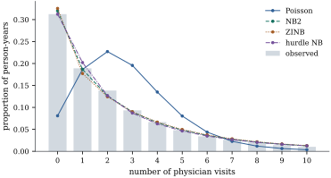

37.5 Zero inflation
Many count data sets have far more zeros than a Poisson or negative binomial model with the right mean can produce. The usual explanation is that zeros come from two places: some units are not at risk at all — they do not smoke, do not drive, are not eligible — and contribute a zero with certainty, while the rest contribute one only when the count happens to be zero. This section writes that story down as a model, does the same for its rival, and asks how the two can be told apart.
37.5.1. Two ways to make extra zeros
Let
(a) The zero-inflated model gives
with
(b) The hurdle model gives
with
These are different stories. The zero-inflated model says there are two kinds of unit and a zero does not reveal which; the hurdle model says there is one kind of unit and two decisions, whether to cross the threshold and how far to go once across. Which is right is a subject-matter question, and the data distinguish them only indirectly.
In the notation of Definition 37.5.1, write
and the hurdle one is
Then:
(a) for the zero-inflated model with
so a zero-inflated Poisson is always overdispersed relative to its own mean unless
(b) the hurdle log-likelihood separates,
(c) the hurdle model can represent zero deflation,
(d) the zero-inflated model contains
Proof.
(a) With the latent representation,
(b) With
(c) In Eq. 37.5.2,
(d) Setting
Part (a) matters when choosing among the four combinations. A zero-inflated Poisson is already overdispersed, so excess zeros with no other anomaly can be described either by a ZIP or by a negative binomial; what a ZIP cannot do is produce a long right tail without also producing extra zeros. Zero inflation on a negative binomial addresses zeros and tail separately, which is why ZINB is the workhorse.
37.5.2. Fitting
The hurdle model needs no new machinery: fit a
logistic regression to
by Bayes’s rule. The M step maximizes the expected
complete-data log-likelihood, which does
separate: a logistic regression of the fractional
response
37.5.3. An example
A proportion
Table
37.5.1. Five count models for the
physician-visit data, all with the same eight
regressors; the zero-inflated models use them in both
parts. The observed proportion of zeros is
| model | parameters | log-likelihood | AIC | BIC | fitted |
|---|---|---|---|---|---|
| Poisson | |||||
| NB2 | |||||
| ZIP | |||||
| ZINB | |||||
| hurdle NB |
Three things stand out. First, zero inflation alone
does not save the Poisson: the ZIP reproduces the zeros
almost exactly, at
The hurdle model wins because of the positive counts,
not the zeros. Splitting each log-likelihood at

import numpy as np
import statsmodels.api as sm
from scipy import optimize, special, stats
data = sm.datasets.randhie.load_pandas().data
y = data["mdvis"].to_numpy(float)
names = ["lncoins", "idp", "physlm", "disea", "hlthg", "hlthf", "hlthp"]
X = np.column_stack([np.ones(len(y))] + [data[v].to_numpy(float) for v in names])
n, p = X.shape
def poisson_irls(X, y, w=None, start=None, tol=1e-11, maxit=200):
"""Weighted Poisson regression with a log link; w are prior weights."""
w = np.ones(len(y)) if w is None else w
beta = np.zeros(X.shape[1]) if start is None else start.copy()
if start is None:
beta[0] = np.log(max((w * y).sum() / w.sum(), 1e-8))
for _ in range(maxit):
mu = np.exp(X @ beta)
XW = X * (w * mu)[:, None]
step = np.linalg.solve(X.T @ XW, XW.T @ (X @ beta + (y - mu) / mu))
if np.max(np.abs(step - beta)) < tol:
return step
beta = step
return beta
def logistic_irls(X, r, tol=1e-11, maxit=200):
"""Logistic regression with a response r in [0, 1] (a fractional response is allowed)."""
gamma = np.zeros(X.shape[1])
for _ in range(maxit):
pi = 1 / (1 + np.exp(-X @ gamma))
v = np.clip(pi * (1 - pi), 1e-10, None)
XW = X * v[:, None]
step = np.linalg.solve(X.T @ XW, XW.T @ (X @ gamma + (r - pi) / v))
if np.max(np.abs(step - gamma)) < tol:
return step
gamma = step
return gamma
def nb_logpmf(y, mu, kappa):
"""log P(Y = y) for the negative binomial with mean mu and shape kappa."""
return (special.gammaln(y + kappa) - special.gammaln(kappa) - special.gammaln(y + 1)
+ kappa * np.log(kappa / (kappa + mu)) + y * np.log(mu / (mu + kappa)))
def poisson_logpmf(y, mu):
return y * np.log(mu) - mu - special.gammaln(y + 1)
def nb_step(X, y, beta, kappa, w):
"""One IRLS step in beta and one Newton step in log kappa, at prior weights w."""
mu = np.exp(X @ beta)
XW = X * (w * mu / (1 + mu / kappa))[:, None] # NB2 working weights, log link
beta = np.linalg.solve(X.T @ XW, XW.T @ (X @ beta + (y - mu) / mu))
mu = np.exp(X @ beta)
s = np.sum(w * (special.digamma(y + kappa) - special.digamma(kappa)
+ np.log(kappa / (kappa + mu)) + 1 - (kappa + y) / (kappa + mu)))
d = np.sum(w * (special.polygamma(1, y + kappa) - special.polygamma(1, kappa)
+ 1 / kappa - 1 / (kappa + mu) - (mu - y) / (kappa + mu) ** 2))
return beta, float(np.clip(np.exp(np.log(kappa) - s / (kappa * d)), 1e-4, 1e4))
def nb_fit(X, y, w=None, start=None, tol=1e-10, maxit=500):
"""Weighted NB2 maximum likelihood: iterate nb_step to convergence."""
w = np.ones(len(y)) if w is None else w
beta, kappa = (poisson_irls(X, y, w), 1.0) if start is None else start
for _ in range(maxit):
new_beta, new_kappa = nb_step(X, y, beta, kappa, w)
done = max(np.abs(new_beta - beta).max(), abs(new_kappa - kappa)) < tol
beta, kappa = new_beta, new_kappa
if done:
break
return beta, kappa
beta_pois = poisson_irls(X, y)
loglik_pois = poisson_logpmf(y, np.exp(X @ beta_pois)).sum()
beta_nb, kappa_nb = nb_fit(X, y)
loglik_nb = nb_logpmf(y, np.exp(X @ beta_nb), kappa_nb).sum()
print(f"Poisson {loglik_pois:.1f} NB2 {loglik_nb:.1f} (kappa {kappa_nb:.3f})")def zero_inflated_em(X, Z, y, negbin=False, tol=1e-10, maxit=2000):
"""EM for a zero-inflated Poisson or NB2 model; returns (gamma, beta, kappa, loglik).
gamma indexes the logistic model for the degenerate component, beta the log-linear
model for the count component. The latent indicator is z_i = 1 if observation i
comes from the degenerate component at zero.
"""
zero = y == 0
gamma = np.zeros(Z.shape[1])
beta, kappa = (poisson_irls(X, y), np.inf)
if negbin:
beta, kappa = nb_fit(X, y)
previous = -np.inf
for _ in range(maxit):
mu = np.exp(X @ beta)
pi = 1 / (1 + np.exp(-Z @ gamma))
log_count = nb_logpmf(y, mu, kappa) if negbin else poisson_logpmf(y, mu)
# E step: the posterior probability that a zero came from the degenerate part
w = np.where(zero, pi / (pi + (1 - pi) * np.exp(log_count)), 0.0)
# M step: a fractional logistic regression and a weighted count regression
gamma = logistic_irls(Z, w)
if negbin:
beta, kappa = nb_step(X, y, beta, kappa, 1 - w) # one step is enough
else:
beta = poisson_irls(X, y, 1 - w, start=beta)
pi = 1 / (1 + np.exp(-Z @ gamma))
mu = np.exp(X @ beta)
log_count = nb_logpmf(y, mu, kappa) if negbin else poisson_logpmf(y, mu)
loglik = np.sum(np.where(zero,
np.log(pi + (1 - pi) * np.exp(log_count)),
np.log1p(-pi) + log_count))
if loglik - previous < tol * abs(loglik):
break
previous = loglik
return gamma, beta, kappa, loglik
gamma_zip, beta_zip, _, loglik_zip = zero_inflated_em(X, X, y)
gamma_zinb, beta_zinb, kappa_zinb, loglik_zinb = zero_inflated_em(X, X, y, negbin=True)
print(f"ZIP log-likelihood {loglik_zip:.2f}")
print(f"ZINB log-likelihood {loglik_zinb:.2f} kappa {kappa_zinb:.3f}")def truncated_nb_loglik(theta, X, y):
"""Log-likelihood of the zero-truncated NB2 model, parameters (beta, log kappa)."""
mu = np.exp(np.clip(X @ theta[:-1], -20.0, 20.0))
k = np.exp(theta[-1])
log_p0 = k * np.log(k / (k + mu)) # log P(Y = 0) before truncation
return np.sum(nb_logpmf(y, mu, k) - np.log(-np.expm1(log_p0)))
def hurdle_nb(X, y):
"""Logistic model for y > 0, zero-truncated NB2 for the positive counts."""
gamma = logistic_irls(X, (y > 0).astype(float))
pi = 1 / (1 + np.exp(-X @ gamma))
loglik_zero = np.sum(np.where(y > 0, np.log(pi), np.log1p(-pi)))
Xp, yp = X[y > 0], y[y > 0]
beta0, kappa0 = nb_fit(Xp, yp) # an untruncated fit as the start
out = optimize.minimize(lambda t: -truncated_nb_loglik(t, Xp, yp),
np.append(beta0, np.log(kappa0)), method="BFGS",
options={"gtol": 1e-5, "maxiter": 800})
return gamma, out.x[:-1], np.exp(out.x[-1]), loglik_zero - out.fun
gamma_h, beta_h, kappa_h, loglik_hurdle = hurdle_nb(X, y)
print(f"hurdle log-likelihood {loglik_hurdle:.2f} kappa {kappa_h:.3f}")37.5.4. Telling them apart
Table 37.5.1 compares fits, not mechanisms, and settles no question about which story is right. It is worth being clear about what the data can and cannot decide.
Identification. When
The Vuong test. For two non-nested
models fitted to the same data, Vuong (1989) proposed
comparing the pointwise log-likelihood ratios
which is asymptotically standard normal when the two
models are equally close to the truth, so that large
The test is often misused, routinely applied to
compare a count model with its own zero-inflated version
— exactly the nested case the theory excludes. Under the
null
mu_p, mu_nb = np.exp(X @ beta_pois), np.exp(X @ beta_nb)
pi_zinb = 1 / (1 + np.exp(-X @ gamma_zinb))
mu_zinb = np.exp(X @ beta_zinb)
pi_h = 1 / (1 + np.exp(-X @ gamma_h))
mu_h = np.exp(X @ beta_h)
p0_h = np.exp(kappa_h * np.log(kappa_h / (kappa_h + mu_h)))
def vuong(log_f1, log_f2):
"""Vuong's statistic for model 1 against model 2 (not valid for nested models)."""
m = log_f1 - log_f2
return np.sqrt(len(m)) * m.mean() / m.std(ddof=1)
log_zinb = np.where(y == 0, np.log(pi_zinb + (1 - pi_zinb) * np.exp(nb_logpmf(0.0, mu_zinb, kappa_zinb))),
np.log1p(-pi_zinb) + nb_logpmf(y, mu_zinb, kappa_zinb))
log_hurdle = np.where(y == 0, np.log1p(-pi_h),
np.log(pi_h) + nb_logpmf(y, mu_h, kappa_h) - np.log1p(-p0_h))
log_nb = nb_logpmf(y, mu_nb, kappa_nb)
print(f"ZINB against NB2 (nested, so not valid): V = {vuong(log_zinb, log_nb):6.2f}")
print(f"ZINB against the hurdle model: V = {vuong(log_zinb, log_hurdle):6.2f}")What does distinguish them. By Proposition 37.5.1(c) the
two differ in what they can say about the positive
counts and about zero deflation, and those are where to
look: comparing fitted and observed frequencies at
Warning. Excess zeros are a symptom, not a diagnosis. Before reaching for a two-part model, check that the mean model is right, that the overdispersion is not heterogeneity a negative binomial would absorb, and that the zeros are not an artefact of the recording process: a question never asked, a period of non-observation, a value truncated on entry. The physician-visit data make the point. Of the two models, the hurdle likelihood factorizes and the zero-inflated one does not, which makes the hurdle easier to fit and to interpret; the zero-inflated model has the better story when there really are two kinds of unit.
37.5.5. Exercises
A. Check your understanding
A ZIP model has
B. Practice
Let
Solution. Write
Derive the mean and variance of a ZINB with inflation
probability
Solution.
Fit a ZINB to the physician-visit data using only an intercept in the inflation part, and compare its AIC with the model of Example (Five models for the physician visits) that uses all the regressors in both parts. Which does AIC prefer, and what does the comparison say about the eight inflation coefficients?
Show that the EM step described around Eq. 37.5.4 increases the observed-data log-likelihood at every iteration, by writing the observed-data log-likelihood as the expected complete-data log-likelihood minus an entropy term and using Jensen’s inequality.
C. Going deeper
Take
Solution. The hurdle model reduces
to
In a zero-inflated model
Solution.